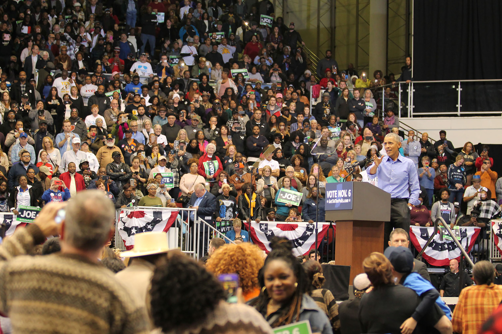
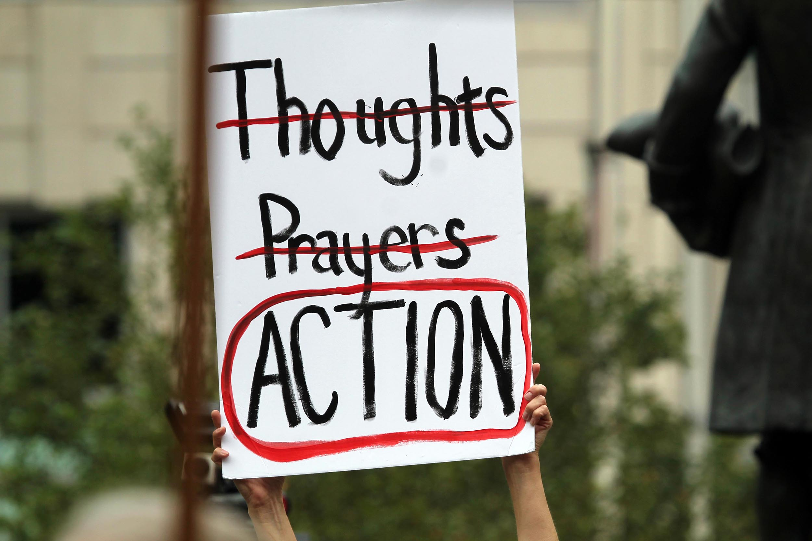
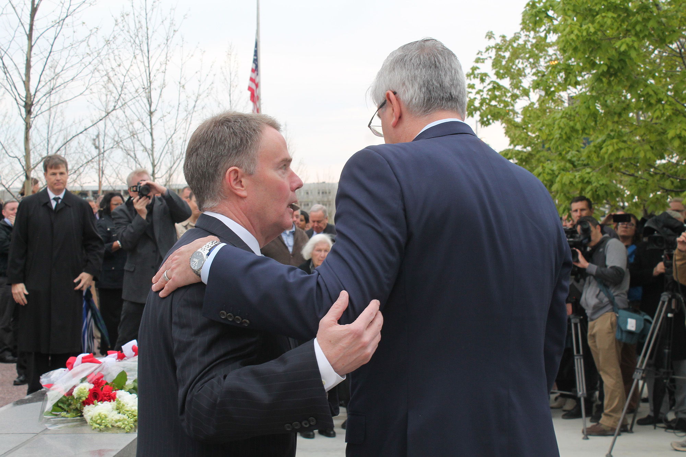
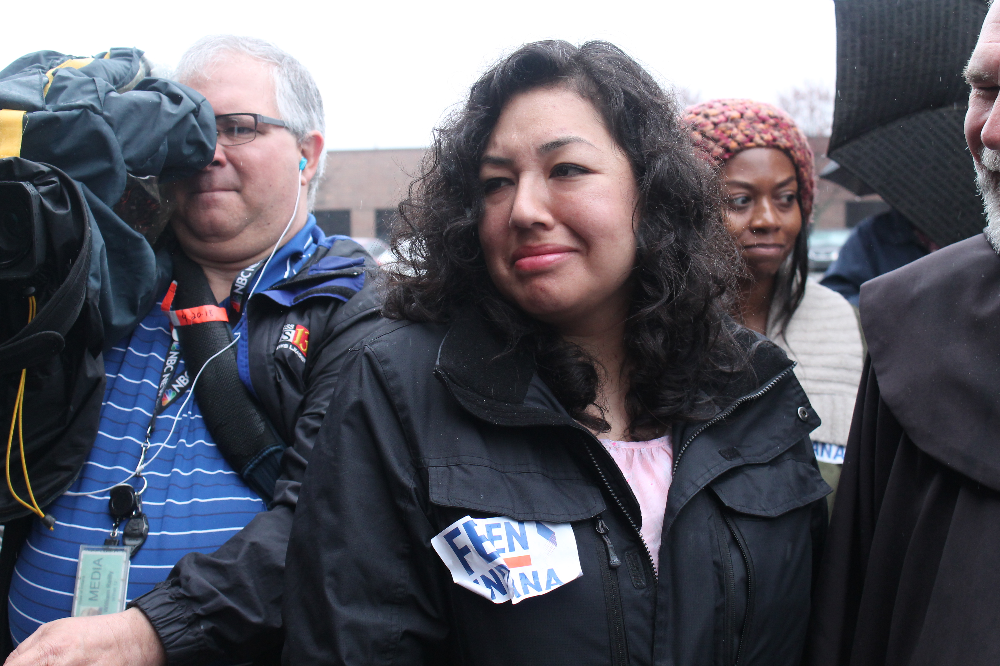

I got into journalism because my high school counselor wouldn't let me take the creative writing class I wanted. She instead, against my protests, signed me up for the newspaper class.
Fast forward seven years and I'm now the digital producer for IPB News, a statewide reporting team for the NPR and PBS affiliates in Indiana.
In September 2016, I became one of the first people in the country to implement the Public Media Platform as a daily content-sharing API among partner stations. To do that, I’ve worked pretty closely with NPR Digital Services as their developers have worked out some of the quirks of the API and move to a new one.
I have the best job in the whole wide world. In addition to the nebulous job title of digital producer, I'm a radio and television reporter for the network, stepping in to assist when resources are limited.
I get to flex creatively almost every day and always on deadline. Below are some of my favorite recent projects highlighting information layering (using tools like Timeline.js and my own work as a programmer), microsites and some of my original reporting.
Interactive graphics
This is some of my favorite work from the last five years. Simple manipulation of out-of-the-box tools like Google Maps and Timeline.js can really make for compelling illustrations of data. Sometimes, you’re required to do way more tinkering – like building a Javascript calculator or illustrating a whiteboard explainer.
These projects had to satisfy two main requirements: they had to be good journalism (explaining what they were designed to explain) and they had to work across four different CMSs as sent through an API.
School referenda explainers
Indiana’s public schools rely heavily on school referenda – ballot initiatives that provide additional funding for schools beyond the property tax cap. Since 2009, nearly 60 school districts have passed a referendum. These two interactive graphics – a property tax calculator and a school district map – illustrate for voters the impact of these ballot initiatives.
The IPB News education reporter and I brainstormed how to best illustrate some of the gaps in school funding for our audience ahead of the May 2019 election. I had make the referenda calculator for previous elections. But the school district map helped illustrate the geographic (and socioeconomic) differences for districts who can and can’t get additional funding at the ballot box.
Whiteboard explainers
Using a program called VideoScribe, I made my first whiteboard explainer for a feature on the Gulf of Mexico’s dead zone, and how agricultural practices in Indiana affect it. The example here, on Indiana’s net metering legislation, is one of my favorites.
Indiana moved to a new standardized test in 2019, and these were the first scores from that change. The scores dropped from the previous standardized test, prompting lawmakers to call for changes to school funding and teacher performance calculations.
Our network can’t afford something like Caspio to display data this way, so a simple Google Sheets-powered searchable database was the way to go.
Curtis Hill timeline
The whole suite of Knightlab tools are incredible. But very few stand above the Knightlab Timeline.js project. Here’s one of the ways we’ve used that tool to track continuing coverage and news events.
Executive government explainer
I had played around with a photo gallery Github project and wasn’t really in love with it. It wasn’t responsive and wasn’t a particularly good photo gallery. After taking some of the bits and pieces of code that I liked, I finally landed on a design for a clickable explainer that I liked.
Maritza Lopez interview
I interviewed Maritiza as part of a larger project on East Chicago’s lead and arsenic crisis. More than 1,000 people were involuntarily relocated from a public housing complex due to environmental contamination. Maritza lives on the Superfund site in a neighborhood just east of the now demolished housing complex.
Along with my own shooting and editing video, I also work with reporters to edit their videos.
Microsites
Single topic speciality sites are some of my favorite things to produce. As a one-person digital team, not every specialty site I pitch is feasible. They’re time consuming work, but the finished product always becomes something special.
East Chicago One-Year project
After covering the lead and arsenic crisis in East Chicago, the business and environment reporters on our reporting team wanted to put together a one-hour show to update our audience on what has happened so far. I worked with them as the health reporter, digital producer, video producer and FOIA librarian to build out this project into a truly multimedia story.
As a statewide reporting team, we cover executive government and U.S. senator races. Our government reporter has, for years, put together two-ways for every candidate in those races. But we hadn’t come up with a creative digital presentation outside of those two-ways.
This is technically a microsite, but I built it so it would also function as an embeddable iframe in the two-ways he was already doing, published to station websites.
Reporting

Former President Barack Obama stumps for U.S. Sen. Joe Donnelly (D-Ind.) in Gary ahead of the 2018 election. (Lauren Chapman/IPB News)

Moms Demand Action hosted a rally at the Indiana Statehouse following the Toledo and El Paso mass shootings. (Lauren Chapman/IPB News)

Democratic Mayor Joe Hogsett and Republican Gov. Eric Holcomb embrace at a memorial service for the late U.S. Sen. Richard Lugar. (Lauren Chapman/IPB News)
President Donald Trump stumps for Mike Braun at Southport High School, just south of Indianapolis. (Lauren Chapman/IPB News)
Every so often, I’m also a reporter. My background is more print-based, so doing a radio feature was a fear I wanted to overcome. Below are a few examples of my original reporting.
Indiana's Religious Left
This is actually my second NPR national feature. I covered some religious groups in the state, organizing for liberal causes like health care access, immigration and preschool. Immediately following the 2018 election, I found out they had developed a political action arm to help elect a few Democrats in contentious statehouse districts.
I’m the unofficial protest reporter for our team. Erika Fierro was brought to the U.S. as a 5-year-old. After the Trump administration’s crackdown on immigration, her husband was detained and deported, and she fought to stay in the U.S. with their two American-born children.
This story is from the first of a few vigils from the Indianapolis faith community to rally with her and show her support.

This site was designed and developed by Lauren Chapman 2019